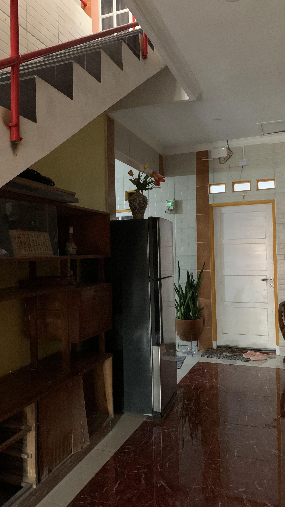
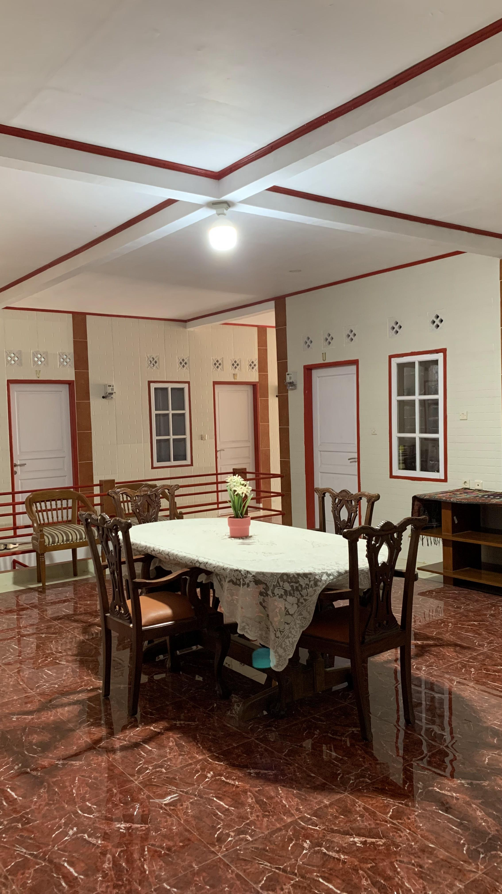

Tambahan fasilitas bersama
Kami menambahkan beberapa fasilitas yang tidak dimiliki oleh indekos pada umumnya

Kulkas Bersama
Kulkas bersama di indekos adalah sebuah fasilitas yang disediakan di tempat hunian bersama, seperti kos atau indekos, yang diperuntukkan bagi para penghuni untuk menyimpan makanan dan minuman mereka.

Ruang Kumpul
Ruang kumpul bersama di indekos adalah area yang dirancang khusus untuk memfasilitasi interaksi sosial dan kegiatan bersama antar penghuni indekos, dan juga untuk menciptakan suasana untuk bersosialisasi, atau melakukan kegiatan bersama.

Dapur Bersama
Dapur bersama di indekos adalah fasilitas umum yang disediakan untuk penghuni tempat tinggal bersama, seperti kos atau indekos. Tujuan dari dapur bersama ini adalah memberikan akses bagi penghuni untuk memasak makanan.